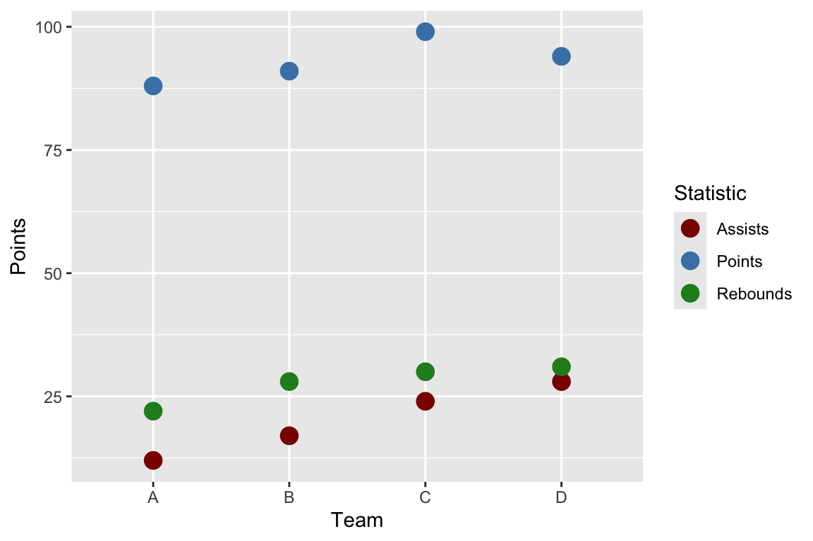

| Team | Points | Assists | Rebounds |
|---|---|---|---|
| A | 88 | 12 | 22 |
| B | 91 | 17 | 28 |
| C | 99 | 24 | 30 |
| D | 94 | 28 | 31 |
Tidy Data, Importing Data & More Advanced Graphics
Thursday, October 1
Today we will…
- Debrief PA 1
- Compare & Contrast Strategies
- New Material
- Tidy Data
- Load External Data
- Graphical Perception
- Colors in ggplot
- Lab 2: Exploring Rodents with ggplot2
PA 1: Using Data Visualization to Find the Penguins
Strategies Used
Tidy Data
Tidy Data
![An educational graphic explaining 'Tidy Data' with text and a simple table. The main text at the top reads, 'TIDY DATA is a standard way of mapping the meaning of a dataset to its structure,' followed by the attribution to Hadley Wickham. Below, it explains the concept of tidy data: 'In tidy data: each variable forms a column, each observation forms a row, each cell is a single measurement.' To the right, there is a small table with three columns labeled 'id,' 'name,' and 'color,' demonstrating how each column is a variable and each row is an observation. The table contains entries such as 'floof' (gray), 'max' (black), and 'panda' (calico). The image ends with a citation for Hadley Wickham's 2014 paper on Tidy Data.](https://cdn.myportfolio.com/45214904-6a61-4e23-98d6-b140f8654a40/85520b8f-4629-4763-8a2a-9ceff27458bf_rw_1920.jpg?h=21007b20ac00cf37318dca645c215453)
Same Data, Different Formats
Different formats of the data are tidy in different ways.
| Team | Statistic | Value |
|---|---|---|
| A | Points | 88 |
| A | Assists | 12 |
| A | Rebounds | 22 |
| B | Points | 91 |
| B | Assists | 17 |
| B | Rebounds | 28 |
| C | Points | 99 |
| C | Assists | 24 |
| C | Rebounds | 30 |
| D | Points | 94 |
| D | Assists | 28 |
| D | Rebounds | 31 |
Connection to ggplot
Let’s make a plot of each team’s statistics!
Code
ggplot(data = bb_wide,
mapping = aes(x = Team)
) +
geom_point(mapping = aes(y = Points,
color = "Points"),
size = 4) +
geom_point(mapping = aes(y = Assists,
color = "Assists"),
size = 4) +
geom_point(mapping = aes(y = Rebounds,
color = "Rebounds"),
size = 4) +
scale_colour_manual(
values = c("darkred", "steelblue", "forestgreen")
) +
labs(color = "Statistic")
Code
ggplot(data = bb_long,
mapping = aes(x = Team,
y = Value,
color = Statistic)
) +
geom_point(size = 4) +
scale_colour_manual(
values = c("darkred", "steelblue", "forestgreen")
) +
labs(color = "Statistic")Tidy Data
![An illustration featuring a cute, cartoonish scene with three characters sitting on a bench. In the center, there is a smiling blue rectangular character resembling a tidy data table, holding an ice cream cone. On either side of the table are two round, fluffy creatures: one pink on the left and one green on the right, both also holding ice cream cones. Above the characters, the text reads 'make friends with tidy data.' The overall tone of the image is friendly and inviting, encouraging positive feelings toward tidy data.](https://cdn.myportfolio.com/45214904-6a61-4e23-98d6-b140f8654a40/40488240-4609-4dc3-8920-693e078b55ce_rw_1920.jpg?h=2e96a7e21e19c43867546498da026649)
Working with External Data
Common Types of Data Files
Look at the file extension for the type of data file.
. . .
.csv : “comma-separated values”
Name, Age
Bob, 49
Joe, 40. . .
.xls, .xlsx: Microsoft Excel spreadsheet
- Common approach: save as
.csv - Nicer approach: use the
readxlpackage
. . .
.txt: plain text
- Could have any sort of delimiter…
- Need to let R know what to look for!
Common Types of Data Files


Loading External Data
Using base R functions:
read.csv()is for reading in.csvfiles.read.table()andread.delim()are for any data with “columns” (you specify the separator).
Loading External Data
The tidyverse has some cleaned-up versions in the readr and readxl packages:
read_csv()is for comma-separated data.read_tsv()is for tab-separated data.read_table()is for white-space-separated data.read_delim()is any data with “columns” (you specify the separator). The above are special cases.read_xls()andread_xlsx()are specifically for dealing with Excel files.
Remember to load the readr and readxl packages first!
What’s the difference?


Reading in Data
![A cartoon showing two paths side-by-side. On the left is a scary spooky forest, with spiderwebs and gnarled trees, with file paths written on the branches like '~/mmm/nope.csv' and 'setwd(/haha/good/luck/)', with a scared looking cute fuzzy monster running out of it. On the right is a bright, colorful path with flowers, rainbow and sunshine, with signs saying 'here!' and 'it’s all right here!' A monster facing away from us in a backpack and walking stick is looking toward the right path. Stylized text reads 'here: find your path.'](images/here-horst.png)
Graphics
Structure: boxplot, scatterplot, etc.
Aesthetics: features such as color, shape, and size that map other variables to structural features.
Both the structure and aesthetics should help viewers interpret the information.
Pre-attentive Features
Pre-attentive Features
The next slide will have one point that is not like the others.
Raise your hand when you notice it.
Pre-attentive Features
knitr::include_graphics("images/pre-atten1.png")
Pre-attentive Features
knitr::include_graphics("images/pre-atten2.png")
Pre-attentive Features
features that we see and perceive before we even think about it
They will jump out at us in less than 250 ms.
E.g., color, form, movement, spatial location.
. . .
There is a hierarchy of features:
- Color is stronger than shape.
- Combinations of pre-attentive features may not be pre-attentive due to interference.
Gestalt Principles
| Gestalt Hierarchy | Graphical Feature |
|---|---|
| 1. Enclosure | Facets |
| 2. Connection | Lines |
| 3. Proximity | White Space |
| 4. Similarity | Color/Shape |
. . .
Implications for practice:
- Know that we perceive some groups before others.
- Design to facilitate and emphasize the most important comparisons.
Double Encoding
knitr::include_graphics("images/double.png")
No Double Encoding
knitr::include_graphics("images/no_double.png")
Color
Color
- Color, hue, and intensity are pre-attentive features, and bigger contrasts lead to faster detection.
- Hue: main color family (red, orange, yellow…)
- Intensity: amount of color
knitr::include_graphics("images/hue.png")
knitr::include_graphics("images/intensity.png")
Color Guidelines
Do not use rainbow color gradients!
Be conscious of what certain colors “mean”.
- Good idea to use red for “good” and green for “bad”?
knitr::include_graphics("images/rainbow.png")![This image is a color-coded map of Texas, showing the percentage of people in each county who identify as white. The map uses a rainbow gradient scale to represent different percentages: red and orange for lower percentages (0% to 25%), transitioning through yellow and green (around 50%), to blue and purple for higher percentages (75% to 100%). Each county in Texas is colored according to where it falls on this scale, indicating the variation in racial identification across the state. The legend at the bottom of the map clarifies the percentage range associated with each color.](images/rainbow.png)
knitr::include_graphics("images/red_green.png")![This image is a bar chart comparing the energy sources of six countries: Mexico, Brazil, Turkey, Russia, Indonesia, and China. Each bar represents a country and is divided into two color-coded segments: red for 'Low-carbon sources' and green for 'Fossil fuels sources.' The chart shows the proportion of energy generated from each source in each country. The purpose of this image is not to demonstrate what fuels each country is using but to highlight how the graph uses red and green hues to separate the two types of fuel. Not only are these colors are difficult for some people's eyes to differentiate, but the plot has swapped what we would ordinarily think of as 'good' and 'bad' colors with fuels that are worse and better for the planet.](images/red_green.png)
Color Guidelines
For categorical data, try not to use more than 7 colors:
knitr::include_graphics("images/small_gradient.png")
. . .
If you need to, you can use colorRampPalette() from the RColorBrewer package to produce larger palettes:
knitr::include_graphics("images/big_gradient.png")![This image is a rectangular strip divided into 19 equal vertical sections, each filled with a different solid color. The colors from left to right are red, maroon, dark blue, teal, green, light green, gray, purple, dark maroon, orange, light orange, yellow, light yellow, gold, brown, pink, light pink, mauve, and light gray. Each section is distinctly separated by thin black lines, with no gradients or transitions between the colors. The image represents an extended color spectrum or palette with a nuanced range of colors.](images/big_gradient.png)
Color Guidelines
- For quantitative data, use mappings from data to color that are numerically and perceptually uniform.
- Relative discriminability of two colors should be proportional to the difference between the corresponding data values.
Color Guidelines
To make your graphic color deficiency friendly…
- use double encoding - when you use color, also use another aesthetic (line type, shape, facet, etc.).
knitr::include_graphics("images/double.png")
Color Guidelines
To make your graphic color deficiency friendly…
- with a unidirectional scale (e.g., all + values), use a monochromatic color gradient.
knitr::include_graphics("images/blues.png")
- with a bidirectional scale (e.g., + and - values), use a purple-white-orange color gradient. Transition through white!
knitr::include_graphics("images/PuOr.png")![This image features a horizontal gradient transitioning between two different color families. On the left side, the gradient starts with a deep purple and gradually lightens to a pale lavender near the center. The gradient then transitions to white in the middle, which serves as a dividing point between the two color families. From the center to the right, the gradient shifts into warm tones, moving from a light peach to a deeper orange, and finally ending with a rich brown on the far right. This gradient smoothly blends the cool purples with the warm oranges, creating a balanced and visually appealing transition between the two color spectrums.](images/PuOr.png)
Color Guidelines
To make your graphic color deficiency friendly…
- print your chart out in black and white – if you can still read it, it will be safe for all users.
knitr::include_graphics("images/nyt_color.png")![This image is a bar chart titled 'How Often Teens Say They Use Each Platform,' depicting the frequency of usage of various social media platforms by teenagers. The platforms listed from top to bottom are YouTube, TikTok, Snapchat, Instagram, and Facebook. Each platform's usage is broken down into six categories, represented as different segments in the bar: Almost constantly (dark blue), Several times a day (medium blue), About once a day (light blue), Less often (lightest blue), Don’t use (gray).](images/nyt_color.png)
knitr::include_graphics("images/nyt_bw.png")
Color in ggplot2
There are several packages with color scheme options:
- Rcolorbrewer
- ggsci
- viridis
- wesanderson
These packages have color palettes that are aesthetically pleasing and, in many cases, color deficiency friendly.
You can also take a look at other ways to find nice color palettes.
Lab 2: Exploring Rodents with ggplot2 & Challenge 2: Spicing things up with ggplot2
On Grading / Feedback….
- Each question will earn a score of “Success” or “Growing”
- Questions marked “Growing” will receive feedback on how to improve your solution
- These questions can be resubmitted for additional feedback
. . .
- Earning a “Success” doesn’t necessarily mean your solution is without error
- You may still receive feedback on how to improve your solution
- These questions cannot be resubmitted for additional feedback
. . .
- Your labs will have an appearance / code format portion.
- Review the code formatting guidelines before you submit your lab!
- Each week, you will be assigned one of your peer’s labs to review their code formatting.
On the Use of External Resources…
Part of learning to program is learning from a variety of resources. Thus, I expect you will use resources that you find on the internet.
In this class the assumed knowledge is the course materials, including the course textbook, coursework pages, and course slides. Any functions / code used outside of these materials require direct references.
. . .
- If you used Google:
- paste the link to the resource in a code comment next to where you used that resource
- If you used ChatGPT:
- indicate somewhere in the problem that you used ChatGPT
- download and attach the
.txtfile containing your entire conversation with ChatGPT
Things You Should Know About ChatGPT…
. . .
- GPT uses machine learning to predict what words to give you
- This method is entirely probabilistic
- Meaning, the same question may produce different answers for different people
. . .
- The answers GPT gives rely a lot on the context you provide (or don’t provide)
- It is good to give lots of background information (e.g., what R package you are using)
. . .
- ChatGPT is a pretty decent tutor.
- Did you use GPT to help you with some code?
- Do you not understand what the code is doing?
- Ask GPT to explain code to you!
To do…
- Lab 2: Exploring rodents with ggplot2
- due Sunday, October 6 at 11:59pm
- Lab 2: Spicing things up with ggplot2
- due Sunday, October 6 at 11:59pm
- Complete Week 3 Coursework: Data Wrangling with dplyr
- Check-ins 3.1 and 3.2 due Tuesday, October 8 at 12pm